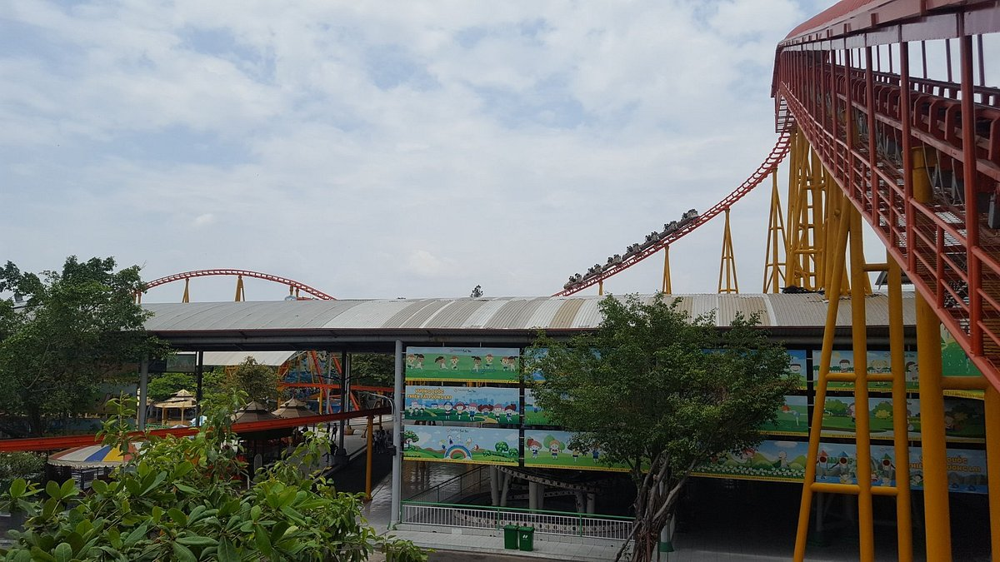

Description
The name "Suoi Tien" itself is a poem. It literally means "heavenly stream" and reflects the exceptional natural beauty of the park. It is nestled in a lush setting, surrounded by peaceful rivers and exotic gardens, creating a relaxing environment while offering a range of breathtaking attractions
The park is not limited to its captivating cultural aesthetics. It offers a myriad of attractions for all ages and tastes. From thrilling roller coasters to refreshing water rides and family-friendly attractions, there's something for every visitor. You can also marvel at the exotic wildlife in the animal park or relax in soothing thermal waters.
